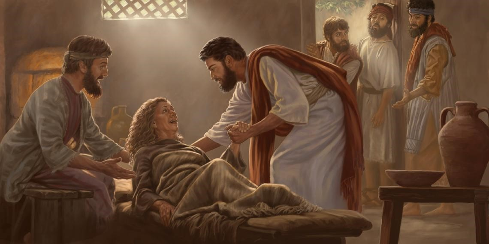

Leitura Orante do Evangelho
Leituras do Dia
Quarta-feira da 22ª Semana do
Tempo Comum
(Verde -Ofício do dia )
2 de setembro de 2020

Oração do dia
Deus do universo, fonte de todo bem, derramai em nossos corações o vosso am or e estreitai os laços que nos unem convosco para alimentar em nós o que é b om e guardar com solicitude o que nos destes . Por Nosso Senhor Jesus Cristo, Vosso Filho, na unidade do Espírito Santo.
Leitura: 1 Coríntios 3,1-9
1Irmãos, não pude falar-vos como a pessoas espirituais. Tive que vos fala r como a pessoas carnais, como a crianças na vida em Cristo. 2Pude oferec er-vos somente leite, não alimento sólido, pois ainda não éreis capazes de tomá-lo. E nem atualmente sois capazes de receber alimento sólido, 3visto q ue ainda sois carnais. As rivalidades e rixas que existem aí, no meio de vós, acaso não mostram que sois carnais e que procedeis de acordo com os impulsos naturais? 4Quando um declara: “Eu sou de Paulo”, e outro: “Eu sou de Apolo”, não estais procedendo como pessoas simplesmente naturais? 5Pois o que é Ap olo? O que é Paulo? Não passam de servidores, pelos quais chegastes à fé. cada um deles exerce seu serviço segundo o dom recebido de Deus. 6Eu plante i, Apolo regou, mas Deus é que fazia crescer. 7De modo que nem o que planta nem o que rega são, propriamente, importantes. Quem é importante é aquele qu e faz crescer: Deus. 8Aquele que planta e aquele que rega formam uma unidade , mas cada um receberá o seu próprio salário, proporcional ao seu trabalho . 9Com efeito, nós somos cooperadores de Deus, e vós sois lavoura de Deus, construção de Deus. –Palavra do Senhor.
Salmo Responsorial: 32(33))
Feliz o povo que o Senhor escolheu por sua herança!
Feliz o povo cujo Deus é o Senhor, e a nação que escolheu por sua herança! Dos altos céus o Senhor olha e observa; ele se inclina para olhar todos os homens.
Feliz o povo que o Senhor escolheu por sua herança!
Ele contempla do lugar onde reside e vê a todos os que habitam sobre a terra. Ele formou o coração de cada um e por todos os seus atos se interessa.
Feliz o povo que o Senhor escolheu por sua herança!
No Senhor nós esperamos confiantes, porque ele é nosso auxílio e proteção! Por isso o nosso coração se alegra nele, seu santo nome é nossa única esperança.
Feliz o povo que o Senhor escolheu por sua herança!Evangelho: Lucas 4,38-44
Naquele tempo, 38Jesus saiu da sinagoga e entrou na casa de Simão. A sogra de Simão estava sofrendo com febre alta, e pediram a Jesus em favor dela. 39Inclinando-se sobre el a, Jesus ameaçou a febre, e a febre a deixou. Imediatamente, ela se levantou e começou a se rvi-los. 40Ao pôr do sol, todos os que tinham doentes atingidos por diversos males os levar am a Jesus. Jesus colocava as mãos em cada um deles e os curava. 4 41De muitas pessoas também saíam demônios, gritando: “Tu és o Filho de Deus”. Jesus os ameaçava e não os deixava falar, porque sabiam que ele era o Messias. 42Ao raiar do dia, Jesus saiu e foi para um lugar desert o. As multidões o procuravam e, indo até ele, tentavam impedi-lo de que os deixasse. 43Mas Je sus disse: “Eu devo anunciar a Boa-nova do Reino de Deus também a outras cidades, porque para isso é que eu fui enviado”. 44E pregava nas sinagogas da Judeia. – Palavra da salvação.
Leituras do mês
TAGS
missao Amazonia evengel covid-19 indigenas novica papa francisco
Destaques
Província Stella Matutina
Rua São Benedito, 2146 - Santo Amaro - São Paulo - SP |
Tel. (11) 5547-7222


Província Spiritus Divinae Sapientiae
Rua Arnaldo Janssen, 320 - Cara-Cara - Ponta Grossa - PR |
Tel. (42) 3326 4091